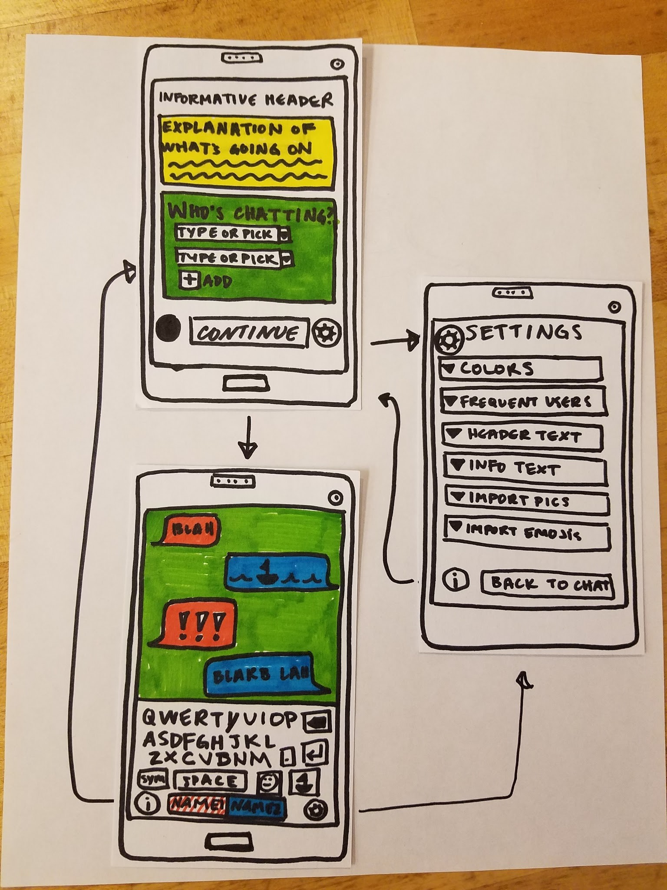

Design Brief
See the previous version of our project brief here.
What is the problem in brief?
Nonverbal communication (forms of communication not using spoken word, such as text, images, and body language) is frequently useful or necessary (possibly due for anxiety attacks, a preference to not communicate with spoken word, or an inability to communicate with spoken word). However, nonverbal communication often lacks a degree of specificity or finesse, and isn’t well-understood by people who primarily communicate verbally. There looks to be room for a frictionless way to convey information in a conversational manner, non-verbally.
How will your project change the status quo? For whom?
Our product would improve the ability and ease of communication for people who are nonverbal. These users can be people who are either permanently or temporarily non-verbal (i.e. having a panic attack or deaf/hard of hearing) as well as those who prefer to communicate nonverbally.
This will allow people who are nonverbal to connect and interact with people who communicate verbally in an easier and more positive manner. In addition, our product would effectively inform people about the reasons and nuances of being non-verbal and allow the uninformed people positively interact with people who are nonverbal.
What is (at least) one naïve design idea (rough sketch)? How does this idea address what you see as the core problem?
One initial design idea we have is to make a smartphone app. We are considering some universal solutions such as Polymer which automatically allows for cross platform compatibility. A smartphone app will allow fast and easy access to this tool when under the specified circumstances above which is vital for the success of an frictionless interface.
A rough sketch of some screens of our app can be seen below.
The app enables the user to inform another of their circumstances, in order to allow the introduction to the conversation to begin easily. The app would probably allow users to pass the phone back and forth. In this naive design idea, customization is heavily emphasized. This method of communication is an integral part of a nonverbal person’s life, so it may be important for them to be able to express themselves through their method of communication.
What information do you need to collect? How will you collect it? How will you meet your target users, or who can serve as effective proxies for them?
Target users are the group of people who use nonverbal communication for a variety of reasons. We would like to focus on interactions in which the people involved would like to interact again in the future. We want to focus on casual conversations, not situations in which a person is nonverbal due to an emergency. It is possible that we will want to narrow our focus to a more specific use case, and also possible that we will be able to create a versatile interface that can be customized for those use cases.
We will be able to glean insights from the reviews left by some of the 10 thousand users of “Emergency chat”, which is a nonverbal, text-based chat client created for use in critical situations such as anxiety attacks. We can learn a lot from this app and its users, and also direct our focus toward different use cases -- for example, nonverbal communication is not only for emergencies, and having an app called “Emergency chat” sets a specific tone and character on the communication.
Additionally, we can look at how people communicate in this space without dedicated tools. For example - when people type out a text, show it to a friend next to them, and then don’t send it, they’re improvising a similar system. In an above-mentioned example of people who become deaf later in life, our digital interface could be compared to an offline counterpart - for example, carrying around a notebook and pen.
How will your team work together to accomplish these goals (as well as your individual learning goals)?
We will all abide to the team contact and support each other to achieve their individual learning goals. We will individually take responsibility of assigned tasks and actively make an effort to maintain the team health.
FAQ
Q: How is this different from a chat app/texting?
A: Chats and texts have a setup time: people must know in advance that they would like to text/chat with each other, and then must exchange contact information; additionally, this contact information and conversation thread can persist longer than participants are comfortable with. Our solution will ideally have minimal setup time or long-term costs, and will center around just one device. This should allow conversations to occur as spontaneously as they would verbally--for much the same reasons as why people may make small talk on buses or planes, but rarely exchange phone numbers in the same circumstances. Additionally, we imagine that this interface will have features that chat apps don’t necessarily have or emphasize (e.g., symbols or figures beyond emojis and stickers).
Q: Why not just use paper and pen?
A: First, paper and pen are not always on hand. Many people carry their phone, but not necessarily enough paper to have a conversation. If the paper is inadequately-sized, it becomes difficult to organize and follow the conversation. Second, using a paper and pen unfairly assumes a level of manual dexterity that isn’t actually universal, whereas phone accessibility settings have gotten pretty good and continue to develop. Touch-screens, for example, allow people to communicate that may not be able to use a pen and paper easily. Third, many people feel comfortable using text and selecting small pictures, but do not feel comfortable drawing small pictures or are not confident in the legibility of their handwriting. Though it would be awesome if everyone could feel confident in their visual communication skills, this is not the battle we have chosen to fight and will have to be reserved for another project.